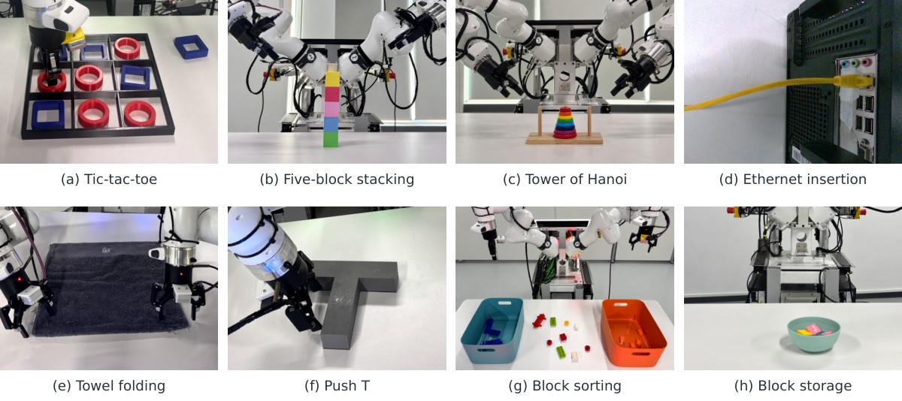

把任务要求和执行程序分开
PyRUA-REAL收到人的任务目标和变化范围后，由研究者代理决定实验方向、停止条件及可复用经验，工程师代理负责编码、运行与诊断。底层模型参数保持固定，改进体现在程序、技能库和经验记录里。实验使用两台Franka Research 3机械臂、Robotiq-85夹爪、头部ZED Mini和腕部RealSense D405相机。相机与机器人状态支持现场判断，传感器并非本次发明的新器件。系统最终交出的可以是一段独立执行的程序，而非每次动作前都重新询问大模型。
PyRUA-REAL · 论文／机器人研究系统

PyRUA-REAL收到人的任务目标和变化范围后，由研究者代理决定实验方向、停止条件及可复用经验，工程师代理负责编码、运行与诊断。底层模型参数保持固定，改进体现在程序、技能库和经验记录里。实验使用两台Franka Research 3机械臂、Robotiq-85夹爪、头部ZED Mini和腕部RealSense D405相机。相机与机器人状态支持现场判断，传感器并非本次发明的新器件。系统最终交出的可以是一段独立执行的程序，而非每次动作前都重新询问大模型。
论文中的井字棋案例把接触的两个圆环识别成一个，导致正确摆放被判失败；堆叠案例则因为选错相机视角，报告了很大的物块归位误差。修正识别器或视角选择可以让记录变化，却不等于机器人真实动作更精准。这些例子说明，代理收到“失败”二字还不足以决定该改哪段控制代码。需要同时看到执行图像、关节轨迹和验收规则，分清物理动作、感知与判定环节。否则可能为了让评分变好而修改错误的部分，并把这种做法继续保存到技能库。
作者报告八种真实任务的开发记录平均成功率为百分之九十一点一，但记录跨越多个程序修订，并不等于最终版本连续运行的可靠性。冻结程序后减少在线思考等待，是另外一个比较；论文明确其执行耗时不含前期探索和开发成本。最精细的网线插入任务在十天探索后仍未得到不需要在线代理的解法。仿真整体分数在摘要与正文存在表达差异，本条不选一个漂亮数字代替核对。对读者更有用的是保留任务、版本与测量阶段，避免把开发中的进步直接换算成工厂可用率。
经验仓库分开保存环境事实、尝试与失败原因、可执行实现。新任务可参考旧技能，但仍要在当前物体和布局下验证。论文还观察到，额外审阅代理会增加下一次实物试验前的等待；前后实验阶段连续发生，不能据此断言所有审阅都没有用。更可操作的设计是给局部修补设停止点，把迟迟没有进展的任务交回研究者重新选方法。对于固定重复工序，经过验证的程序便于复用；对于频繁接触未知物体、现场条件持续变化的任务，在线诊断和人的介入仍不能省略。